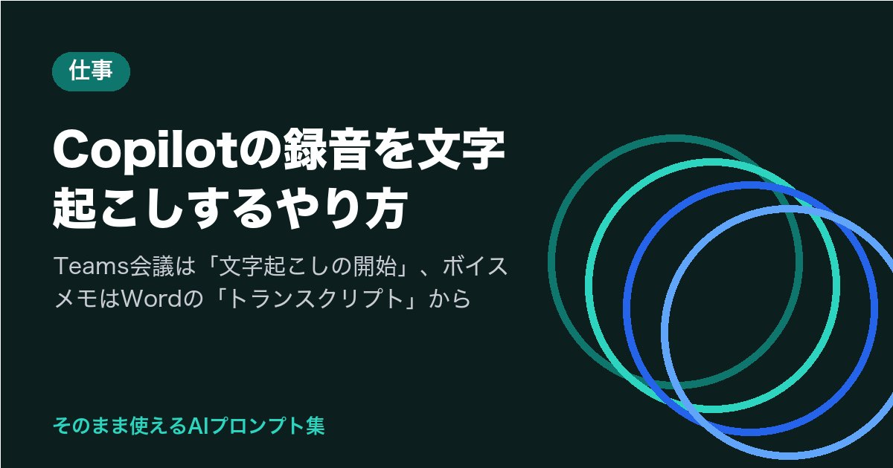

Copilotの録音を文字起こしするやり方｜Teams会議は「文字起こしの開始」、ボイスメモはWordの「トランスクリプト」から
※この記事はプロモーション（広告）を含みます

会議のあと、「さっきの話、録音しておけばよかった」と思ったことはありませんか。
Copilotの録音を文字起こしするやり方は、Teams会議なら会議中に「文字起こしの開始」（または「記録」）をオンにしてからCopilotに聞く、ボイスメモならWordの「トランスクリプト」で文字にしてからAIに整えてもらう、の2通りです。
この記事では、Microsoftの公式ヘルプで確かめた操作の場所と、文字起こしを議事録やToDoに変えるコピペ用のプロンプトを、会議・工程の打ち合わせ・現場の聞き取りの例で紹介します。
確認日：2026年11月6日（操作の場所はMicrosoftの公式ヘルプで確認。画面や名前は変わることがあり、会社の管理者の設定で使えない場合もあります）
この記事でわかること：録音・文字起こし・Copilotの3つをつなぐと、会議のあとの「聞き直し」と「議事録の清書」の時間を小さくできます。
Copilotの録音と文字起こし｜まずは2つの場面を分ける
「Copilotで録音を文字起こししたい」と思ったとき、迷いやすいのは、場面によって使う道具が違うからです。私も最初は、Teamsの会議もスマホのボイスメモも同じボタンでできると思い込み、どこを押せばいいのか探し回る、というつまずきをしがちでした。これはよくあるつまずきで、場面を2つに分けるだけで道がはっきりします。
| 場面 | 録音のしかた | 文字にする場所 | Copilotの使い方 |
|---|---|---|---|
| Teamsのオンライン会議 | 会議中に「記録」または「文字起こしの開始」 | Teamsが会議中に文字にする（トランスクリプト） | 会議中・会議後に、会議の内容をCopilotに質問する |
| 対面の打ち合わせ・現場の聞き取り（ボイスメモ） | Wordでその場で録音、またはスマホやICレコーダーで録った音声ファイルを使う | Wordの「ホーム」→「ディクテーション」→「トランスクリプト」 | 文字起こしを、会社が認めたAI（Copilotなど）に貼って議事録やToDoに整えてもらう |
表で見ると、Teams会議は「Teamsの中で全部つながる」、ボイスメモは「Wordで文字にしてからAIに渡す」という違いがあると分かります。あなたが今日まとめたいのは、どちらの場面でしょうか。
どちらの場面でも、録音する前に、会社の決まり（録音の同意・情報の持ち出し）を先に確かめるのが出発点です。会社によっては、会議の録音や文字起こし、AIの利用に社内の規程があります。
Teams会議の文字起こしとCopilot｜オンにする場所と聞き方
Teams会議でCopilotに内容を聞くには、会議中に文字起こしがオンになっていることが大切です。公式ヘルプでは、Copilotをオンにするだけなら文字起こしは要らない一方で、会議の内容をあとからCopilotに質問したり、終わったあとにCopilotとの会話を見返したりするには、会議中に文字起こしをオンにしておく必要がある、と説明されています（執筆時点）。
文字起こしをオンにする場所
- 会議中に、会議コントロールの「その他のアクション」から「文字起こしの開始」を選びます
- 会議で話している言語（日本語など）を確かめて、「確認」を選びます
- 録画・録音したいときは、「その他のアクション」から「記録」を選びます。公式ヘルプでは、録画を始めると文字起こしも自動で始まると説明されています
- 文字起こしや録画が始まると、参加者全員に通知が出ます
公式ヘルプでは、文字起こしを始められるのは既定では開催者と共同開催者、録画できるのは会社の管理者が録画を認めていて対象のライセンス（契約の種類）を持つ人、とされています。ボタンが見つからない・押せないときは、会社の管理者の設定やライセンスで使えないようになっている場合があります。そのときは無理に探さず、社内の窓口に確かめるのが近道です。
会議の「Copilotを許可する」の選び方
会議の開催者は、会議のオプションの「Copilot およびその他の AI」で、Copilotの使い方を選べます。公式ヘルプにある選択肢は次の3つです（会社のポリシーなどで選べるものが変わる場合があります）。
- 会議中および会議後：文字起こしを始めるとCopilotが動き、会議後も内容を聞ける
- 会議中のみ：文字起こしなしでも会議中にCopilotを使える。会議が終わると、文字起こししていない部分やCopilotとのやり取りは使えなくなる
- オフ：Copilotも、録画・文字起こしも使えない
会議のあとで議事録を作りたいなら、「会議中および会議後」にして文字起こしをオンにしておくと安心です。
会議のあとにCopilotに聞く
公式ヘルプでは、会議が終わったあと、会議のチャットの右上にあるCopilotのアイコンや、「まとめ（要約）」のタブからCopilotを開けると説明されています。トランスクリプト（文字起こしの全文）は「まとめ」タブから見られ、既定では開催者と共同開催者が .docx などの形でダウンロードできます。
Copilotの入力欄には、たとえば次のように聞きます。
会議の名前：【例：来週の生産計画の打ち合わせ】
条件：
・「決まったこと」「ToDo（担当者・期限）」「保留になったこと」の3つに分けてください
・ToDoは表にして、担当者と期限が会議で言われていない所は【未定】と書いてください
・会議で出ていない内容は足さないでください
・聞き取りがあいまいな所や、言った人が分からない所には（要確認）と付けてください
「会議で出ていない内容は足さないで」「分からない所は【未定】」の2文があると、もっともらしい担当者や日付が作られにくくなります。AIの答えに作り話がまじる理由と防ぎ方は、Copilotのハルシネーションを防ぐプロンプトにまとめています。
ボイスメモの文字起こし｜Wordの「トランスクリプト」で文字にする
対面の打ち合わせや、現場での聞き取り、移動中に吹き込んだボイスメモは、Wordの文字起こしの機能で文字にできます。公式ヘルプでは、Word for Microsoft 365（Windows）、Web用Word、OneNote for Microsoft 365（Windows）で使えると説明されています（執筆時点。会社の契約や設定によって違う場合があります）。
文字起こしまでの手順
- Wordで新しい文書を開き、「ホーム」→「ディクテーション」→「トランスクリプト」を選びます（OneNoteは「ホーム」→「その他のコマンド」→「トランスクリプト」）
- その場で録るときは「録音の開始」、録ってある音声を使うときは「オーディオのアップロード」を選びます
- 録音したときは、終わったら「保存してトランスクリプトを作成する」を選びます
- 文字起こしが出たら、話している人ごとに「Speaker 1」「Speaker 2」のように分かれて表示されます。「すべてをドキュメントに追加」で、文書に貼りつけます
公式ヘルプでは、アップロードできる形式は .wav・.mp4・.m4a・.mp3 とされています。スマホのボイスメモの多くは .m4a なので、パソコンに移してからアップロードできます。音声ファイルは、OneDriveの「Transcribed Files」フォルダーに保存されます。また、毎月アップロードして文字起こしできる分数には、契約の種類ごとに上限があると説明されています。長い録音が多いときは、公式ヘルプで今の上限を確かめておくと安心です。
きれいに文字になる録り方
公式ヘルプには、マイクについての注意も書かれています。
- 対面の会議では、ヘッドセットのマイクが選ばれていると周りの声を拾えないことがあるので、パソコンの既定のマイクを確かめます
- Web用Wordでは、ブラウザーにマイクの使用を許可する必要があります
- 文字起こしの間は、「トランスクリプト」の画面を開いたままにしておきます
会議室の机の真ん中にマイクを置くと、端に座った人の声も拾いやすくなります。声が遠い・小さいと、文字起こしの誤りも増えます。録音の道具をそろえるなら、こうした機器も候補になります。
文字起こしを議事録に変えるプロンプト｜コピペで使える3つの型
文字起こしは、そのままだと「えー」「あの」や言い直しが多く、読みにくい文章です。会社が認めたAI（会社のアカウントで使うCopilotなど）に貼りつけて、使える形に整えてもらいます。貼る前に、取引先の名前や金額、社員の名前などは仮の名前に置きかえておくと安心です。
型1｜読みやすい文章に整える
文字起こし：【ここにWordやTeamsの文字起こしを貼る（社外秘・個人情報は消した版）】
条件：
・「えー」「あの」などのつなぎの言葉と、言い直しを消してください
・話した人の区別（Speaker 1など）は残してください
・数字・日付・製品名は、元の文字起こしのまま変えないでください
・聞き取りの誤りらしい言葉には（要確認：元の言葉）と付けてください
型2｜議事録とToDoにまとめる
会議の種類：【例：品質の定例会議／営業との納期調整】
文字起こし：【ここに型1で整えた文章を貼る】
条件：
・最初に「この会議で決まったこと」を3行以内で書いてください
・続けて「決まったこと」「ToDo（担当者・期限）」「保留になったこと」「次回までに確かめること」に分けてください
・ToDoは表にしてください。担当者や期限が出ていない所は【未定】と書いてください
・文字起こしに無い内容は足さないでください
型3｜聞き取りメモを報告の形に整える
場面：【例：工場の現場で、不良が出た工程について担当者から聞き取りをした】
文字起こし：【ここに文字起こしを貼る（個人名は「担当者A」などに置きかえた版）】
条件：
・「結論」「分かった事実」「まだ分からないこと」「お願いしたいこと」の順に並べてください
・事実と、話した人の推測を分けて書いてください
・全体で400字以内、です・ます調にしてください
議事録の型をもっと知りたいときは、議事録をAIにまとめてもらうプロンプトも参考になります。会議のあとにメールで共有するときは、型2の「この会議で決まったこと」の3行を、そのままメールの最初に置くと伝わりやすくなります。
「文字起こしを貼るだけで、本当に議事録になるの？」という声もあります。AIがやってくれるのは「下書き」までです。誰が何をいつまでにやるかは会議で決まったことなので、最後にあなたが文字起こしの元の箇所と見比べて確かめると、速さと安心の両方が手に入ります。
うまくいかないときの直し方
文字起こしや整え方が、思ったとおりにいかないこともあります。よくあるつまずきと、直し方です。
- Teamsに「文字起こしの開始」が見当たらない：ライブ文字起こしは、公式ヘルプではデスクトップ版のTeamsで使えると説明されています。スマホのアプリで参加していないか確かめます。それでも無いときは、会社の管理者の設定で止められている場合があるので、社内の窓口に聞きます
- 会議のあとにCopilotが「内容が分からない」と答える：会議中に文字起こしがオンになっていなかった可能性があります。次の会議からは、始まってすぐ「文字起こしの開始」を押すと決めておくと安心です
- Wordで音声がアップロードできない：ファイルの形式が .wav・.mp4・.m4a・.mp3 か確かめます。インターネットにつながっていないと文字起こしはできません
- 文字起こしに誤字が多い：マイクを話す人の近くに置き、型1のプロンプトに「製品名は【例：C製品、D工程】です。似た言葉はこの名前に直してください」と、よく出る言葉を足します
- AIが元の数字や日付を書きかえてしまう：「数字・日付・製品名は1文字も変えないでください。変えた所があれば最後に一覧にしてください」と頼み直します
- 議事録が長すぎる：「決まったことは3行、ToDoは5件までにしてください」のように、数で上限を伝えます
それでも合わないときは、型1・型2を一度に頼まず、「まず整えるだけ」「次に議事録にするだけ」と分けて頼むと、ずれが小さくなります。
録音の前に確かめたいこと｜同意と会社の決まり
録音と文字起こしはとても便利な一方で、話した人の声と言葉がそのまま残ります。使う前に、次の点を確かめておくと安心です。
- 会社の決まり（録音の同意・情報の持ち出し）を先に確かめる。会議の録音や文字起こし、AIの利用について、社内の規程や上司の了解が要る場合があります
- 会議に出る人の了解を、録音の前にもらう。Teamsは録画や文字起こしが始まると全員に通知を出しますが、それとは別に、会議の最初に「議事録のために録音と文字起こしをしてもよいですか」と一言聞くと、相手も安心して話せます。公式ヘルプでも、地域によっては記録する前に全員の許可が必要になる場合がある、と書かれています
- 社外の人が入る会議は、とくに丁寧に。取引先との打ち合わせは、録音してよいかを先に相手に確かめます
- 社外秘・個人情報は、会社が認めたAI以外に貼らない。個人で使っているAIや、会社が認めていないサービスに文字起こしを貼ると、情報の持ち出しになることがあります
- 録音ファイルの置き場所を決めておく。公式ヘルプでは、Teamsの会議の録画とトランスクリプトは開催者のOneDriveなどに、Wordで文字起こしした音声はOneDriveの「Transcribed Files」に保存されると説明されています。いらなくなったファイルの消し方も、社内の決まりに合わせます
この記事のやり方は、会議や聞き取りのあとの「清書の手間」を減らすためのものです。録音してはいけない場や、相手の了解が取れない場面には向きません。また、法律や契約の中身の判断を文字起こしから決める使い方にも向きません。Teams・Word・Copilotの機能や画面は、会社の契約や設定、時期によって変わることがあります。執筆時点の内容なので、くわしくは公式の説明と社内の案内で確かめてください。
対面の打ち合わせが多く、パソコンを開けない場面では、録音の専用の機械を使う方法もあります。録った音声ファイルをWordにアップロードすれば、同じ手順で文字にできます。
確かめた公式の情報
- Microsoft Teams 会議で Copilot を使用する（Microsoft サポート）
- Microsoft Teams 会議でライブ文字起こしを表示する（Microsoft サポート）
- Microsoft Teams で会議を録画する（Microsoft サポート）
- 録音を文字起こしする（Word・OneNote、Microsoft サポート）
気になる1冊の中身を、まずは試し読みで確かめてみませんか？

まとめ
- Copilotの録音を文字起こしするやり方は、Teams会議とボイスメモで分けて考えると迷わない
- Teams会議は、会議中に「その他のアクション」→「文字起こしの開始」（または「記録」）。会議のあとにCopilotに聞くには、会議中に文字起こしがオンになっていることが大切
- ボイスメモは、Wordの「ホーム」→「ディクテーション」→「トランスクリプト」で、録音するか音声ファイルをアップロードする
- 文字起こしは、型1〜3のプロンプトで「整える」「議事録とToDoにする」「報告メモにする」
- 録音の前に、会社の決まり（録音の同意・情報の持ち出し）を確かめ、会議に出る人の了解をもらう。社外秘・個人情報は会社が認めたAI以外に貼らない
ここまで読んでくださって、ありがとうございます。
まずは次の社内の打ち合わせで、最初に「議事録のために文字起こしをしてもよいですか」と一言聞き、「文字起こしの開始」を1回だけ押してみませんか。この1つだけで十分です。会議のあとの清書が少しずつ短くなれば、浮いた時間を家族との時間や、自分の学びの時間に回せます。
あなたが最初に文字起こししてみたいのは、どの会議でしょうか？
最後まで読んでくださり、ありがとうございました。
気になったプロンプトを1つコピーして、今日の用事で1回だけ試してみませんか。空欄を埋めて送るだけで始められます。
あなたなら、何をAIに頼んでみますか？
この記事は下書きにAIを使い、内容は運営者が公式情報で確認しています。